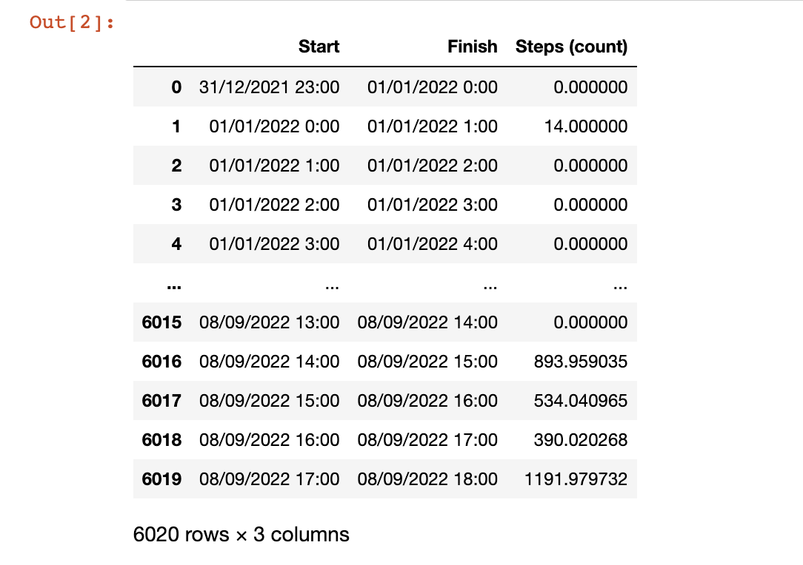
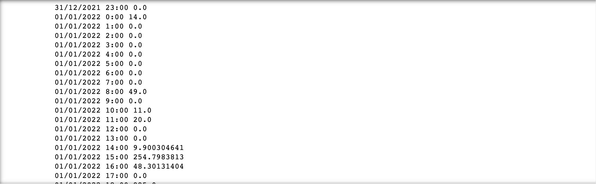
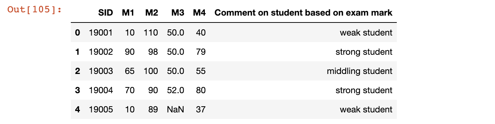
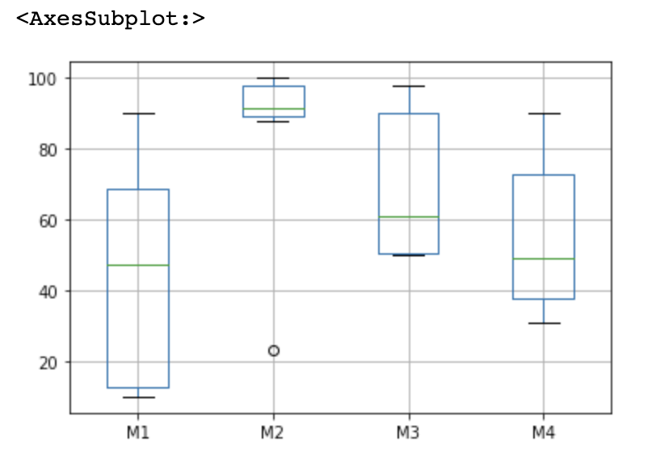

Before reading this blog, we assume you have already install the Jupyter Notebook, pandas and PythonJupyter Notebook (1)
Data Access Before cleaning the data, we need to know some basic skills of access the data in pandas data frame.
We use the Participant_03.csv dataset as example
1 2 p3 = pd.read_csv("Participant-03.csv" , sep="," ) p3

Access the row access the specific row Using iloc[] to access the specific row
1 2 3 4 5 Out[3]: Start 31 /12/2021 23 :00 Finish 01 /01/2022 0 :00 Steps (count) 0.0 Name: 0 , dtype: object
iterate over rows Use the iterrows function to iterate.
If we want to iterate each Start date and Steps(count)
1 2 for index, row in p3.iterrows(): print(row['Start' ],row['Steps (count)' ])

Access the column access by column name If we want to access the Start column, we could directly use [] to access
1 2 3 4 5 6 7 8 9 10 11 12 13 Out[14]: 0 31 /12/2021 23 :00 1 01 /01/2022 0 :00 2 01 /01/2022 1 :00 3 01 /01/2022 2 :00 4 01 /01/2022 3 :00 ... 6015 08 /09/2022 13 :00 6016 08 /09/2022 14 :00 6017 08 /09/2022 15 :00 6018 08 /09/2022 16 :00 6019 08 /09/2022 17 :00 Name: Start, Length: 6020 , dtype: object
access by column index If we want to access the first column, we could still use the iloc[] function.
1 2 3 4 5 6 7 8 9 10 11 12 13 Out[16]: 0 31 /12/2021 23 :00 1 01 /01/2022 0 :00 2 01 /01/2022 1 :00 3 01 /01/2022 2 :00 4 01 /01/2022 3 :00 ... 6015 08 /09/2022 13 :00 6016 08 /09/2022 14 :00 6017 08 /09/2022 15 :00 6018 08 /09/2022 16 :00 6019 08 /09/2022 17 :00 Name: Start, Length: 6020 , dtype: object
Access the specific value if we want to access the first value which in the first row and first column
1 2 Out[17 ]: '31/12/2021 23:00'
Data Clean Here, we use the test.csv dataset as example
1 2 data = pd.read_csv("test.csv" ) data.head()

Clean the NaN value Check NaN value
check the NaN value position
1 2 3 4 5 6 7 8 9 10 11 SID M1 M2 M3 M4 Comment on student based on exam mark 0 False False False False False False 1 False False False False False False 2 False False False False False False 3 False False False False False False 4 False False False True False False 5 False False False False False False 6 False False False False False False 7 False False False False False False 8 False False False False False False 9 False False False False False False
check the NaN summary
1 print(data.isnull().sum())
1 2 3 4 5 6 7 SID 0 M1 0 M2 0 M3 1 M4 0 Comment on student based on exam mark 0 dtype: int64
check for any NaN value
1 data.isnull().values.any()
check the NaN value for a single row
1 2 3 4 5 6 7 8 9 10 11 12 Out[7]: 0 False 1 False 2 False 3 False 4 True 5 False 6 False 7 False 8 False 9 False Name: M3, dtype: bool
Replace NaN with 0 Use fillna() function to replace the NaN value with 0
1 2 3 4 5 6 7 8 9 10 11 12 Out[10]: 0 50.0 1 50.0 2 50.0 3 52.0 4 0.0 5 53.0 6 98.0 7 90.0 8 90.0 9 90.0 Name: M3, dtype: float64
Replace NaN with the average column Based on the context, Only M3 has null value and it represent the mark of M3. According to the M3 of other students, it has little probability to get 0 mark and there is no replacement mark for that student. This may be caused by the omission in inputting the results. Hence, change it to the average score of other marks in M3 which is more reasonable for later analysis and statistics.
1 2 data["M3" ] = data["M3" ].fillna(data["M3" ].mean(skipna=True )).astype(int) data['M3' ]
1 2 3 4 5 6 7 8 9 10 11 12 Out[14]: 0 50 1 50 2 50 3 52 4 69 5 53 6 98 7 90 8 90 9 90 Name: M3, dtype: int64
skipna = True: this is used to calculate the mean value without count the NaN value
astype(int): change the data type to int due to it represents the grade of the student
Afrer clean the NaN, the NaN value is replaced with 69
Clean the incorrect value 1 2 3 4 5 6 7 8 9 10 11 12 Out[15]: 0 110 1 98 2 100 3 90 4 89 5 90 6 23 7 88 8 93 9 97 Name: M2, dtype: int64
According to the Mark descriptions, the upper bound of each mark is 100. However, the M2 of student 19001 is 110 which is over 100.
Replace with reasonable value Change the 110 to 100
1 data['M2' ] = data['M2' ].replace([110 ], 100 )
Drop the incorrect value Drop the 110 value
1 data = data.drop(data[data.M2 == 110 ].index)
Remove outliers Detect outliers
Boxplot
Drawing boxplot to detect outliers
1 2 boxplot = data.boxplot(column=['M1' , 'M2' , 'M3' ,'M4' ]) boxplot

According to the boxplot, there is a outlier in M2 which is a point very far away from the quntile 1 and it is 23.
Calculate the quantile
1 2 3 4 5 6 7 8 def findOutliers (series) : minimum = series.min() Q1 = series.quantile(0.25 ) mid = series.mean() Q3 = series.quantile(0.75 ) maximum = series.max() return 'Min:' ,minimum,'Q1:' ,Q1,'Average:' ,mid,'Q3:' ,Q3,'Max:' ,maximum findOutliers(data['M2' ])
1 2 Out [16] :M2 : ('Min:' , 23 , 'Q1:' , 89.25 , 'Average:' , 86.8 , 'Q3:' , 97.75 , 'Max:' , 100 )
According to the result, the minimum 23 is smaller than the quantile 1 89.25 and low down the average. Hence, 23 si an outlier.